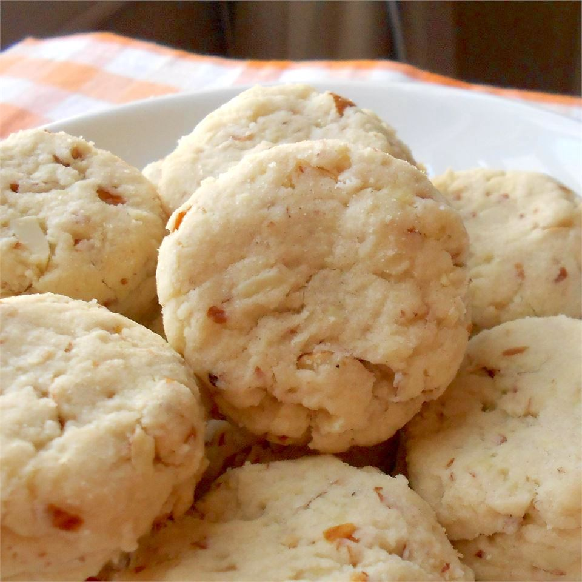
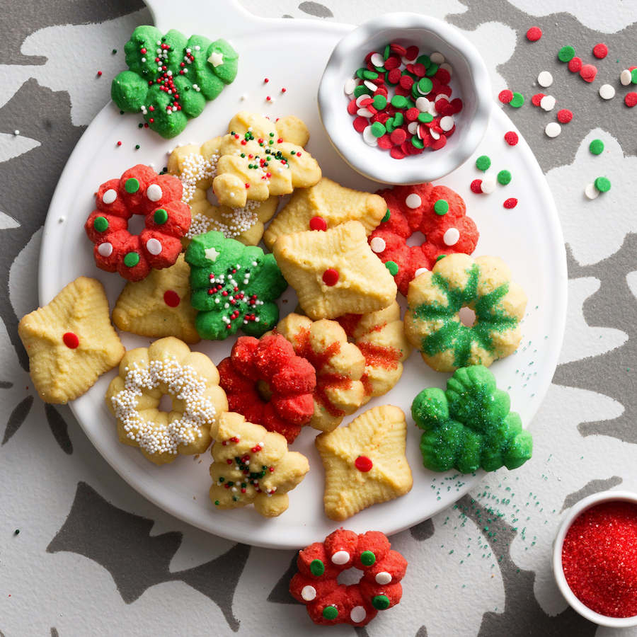
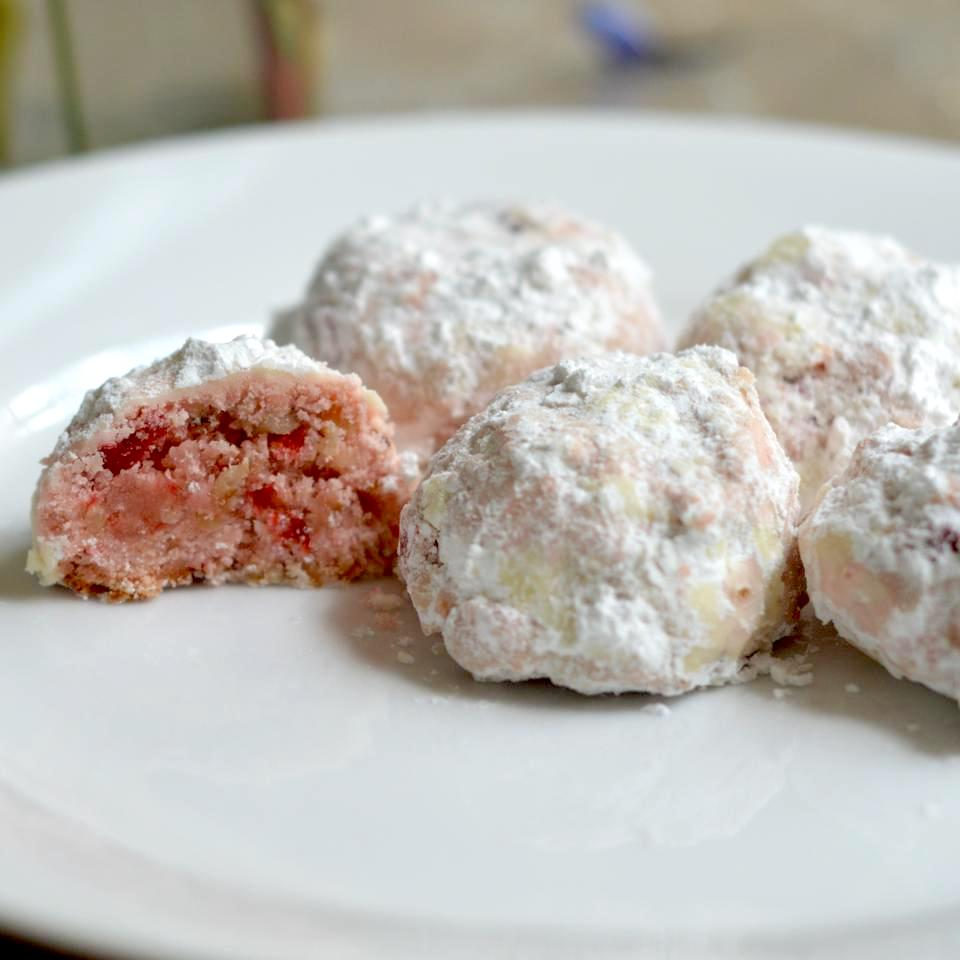

Coffee Leaves
Lauching Cookies
(As Soon As Possible)
Butter Cookies

Like shortbread cookies,butter cookies have a high proportion of butter to flour.The difference between the two is that
butter cokkies have increased amounts of flour and sugar, helping them to hold their shape better than shortbread.Their
sturdy texture allows them to shopped as gifts, and they're perfect for rolling and cutting into a variety of festivals shapes
Spritz Cookies

These German cookies are traditionally served around christmas time.They're made by squriting the dough through a cookies
press to make intricate designs.Spritz cookies can come in variety of color and flavour, including almond,peanut butter,
orange,chocolate,and more.Dip them in chocolate and decorate with sprinkles for a festive treat.
Snowball Cookies

These melt-in-your mouth cookies go by many names including Mexican Wedding cakes, butterballs, and Russian tea cakes.
They're balls of buttery shortbread filled with pecans and rolled with powdered sugar.A wintery sweet no one can resist.